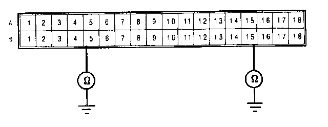

Poor Ground at SRS Unit
Poor ground at SRS unit or unit mounting bolts.
NOTE (L and LS models): Before disconnecting the battery cables, be sure you get the customer's anti-theft radio code number.
1. Before disconnecting any part of the SRS wire harness, disconnect both the negative and positive battery cables. Then install the short connectors - refer to "Short Connector Installation" procedure.
2. Connect Test Harness B between the SRS unit and SRS main harness 18-P connector.

3. Check for continuity between the B5 terminal and body ground, and the B15 terminal and body ground.

- If there is continuity, the SRS unit is faulty. Replace and recheck the voltages according to the chart in the "Indicator Stays On Continuously" procedure.
- If there is no continuity, the SRS unit ground, the control unit component grounds or the SRS main harness is faulty. Check the grounds (check wire and control unit mounting bolts) and, if necessary, replace the SRS main harness. Recheck the voltages according to the chart in the "Indicator Stays On Continuously" procedure.